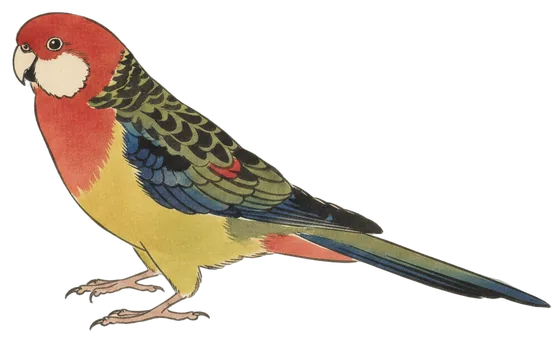

Lead story
Eastern Rosella heads a nine-species day
Heard once, among nine species at the station in the last 24 hours.

The Eastern Rosella (Platycercus eximius) was heard once in the 24 hours to 8:30 am, first at 9:09 am yesterday. Its clearest call scored 85% confidence.
It has now been heard on three days of the station's 45. BirdNET's range model rates it one of the most widespread birds around Canberra. Atlas of Living Australia records show it lives in the Canberra region year-round.
- Calls
- 1
- First heard
- Fri 9:09 am
- Best call
- 85%
- Days heard
- 3 of 45